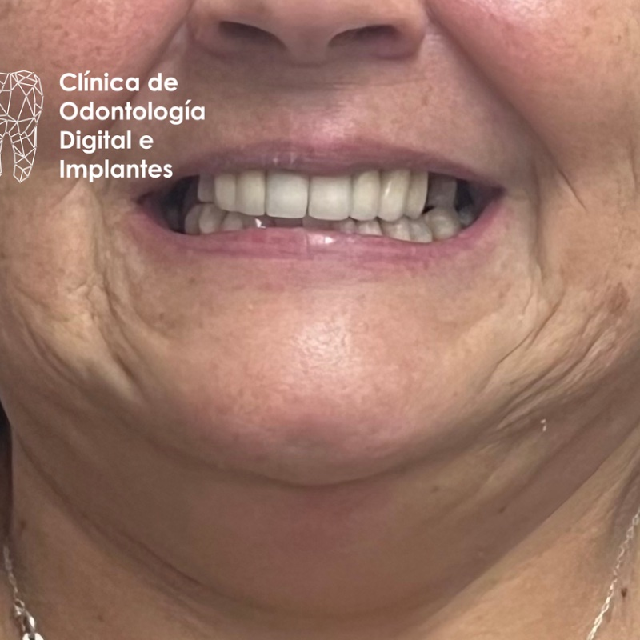
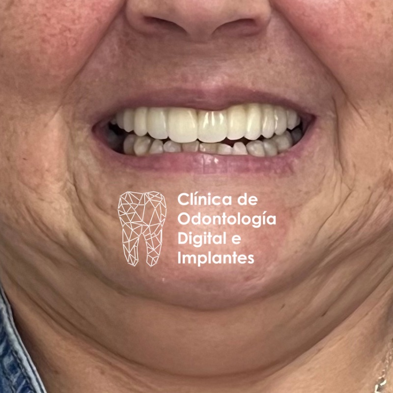

01
Full arch · Rehabilitación total
Recuperar función y estética en una sola arcada.
Paciente que presentaba alteraciones estéticas y funcionales severas debido a prótesis fijas plurales muy antiguas en mal estado. La solución consistió en una rehabilitación full arch sobre implantes — reemplazando toda la arcada con una prótesis fija soportada por implantes, planificada digitalmente para optimizar la posición de cada implante y devolver la función masticatoria y la estética.
- Tratamiento
- Full arch sobre implantes
- Problema previo
- PF plurales antiguas
- Planificación
- Digital · cirugía guiada
- Resultado
- Función + estética restaurada

